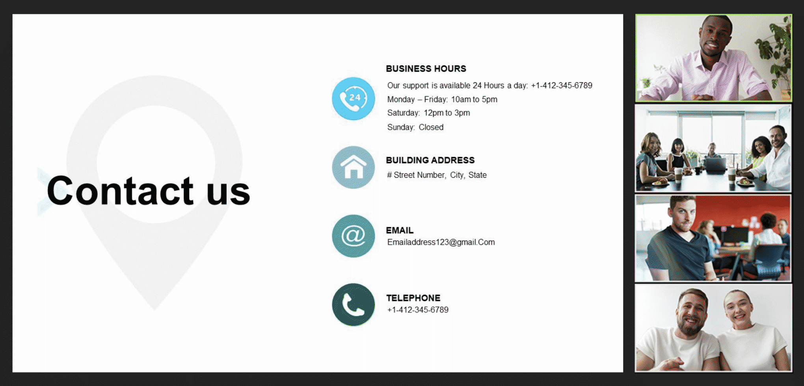

Alex's UX Prototype
Zoom
General
Video & effects
Audio
Notifications & sounds
Meetings & webinars
Recording
Share Screen
Team Chat
Accessibility
Keyboard shortcuts
Statistics
My account
Chat and Video
Chat display size
Automatically dim video when flashing visual patterns are detected
Reduce blue light exposure with warm color video overlay
Automatically reduce eye-strain when viewing bright screen shares
Caption color
Aa
Aa
Aa
Aa
Font type
Position
